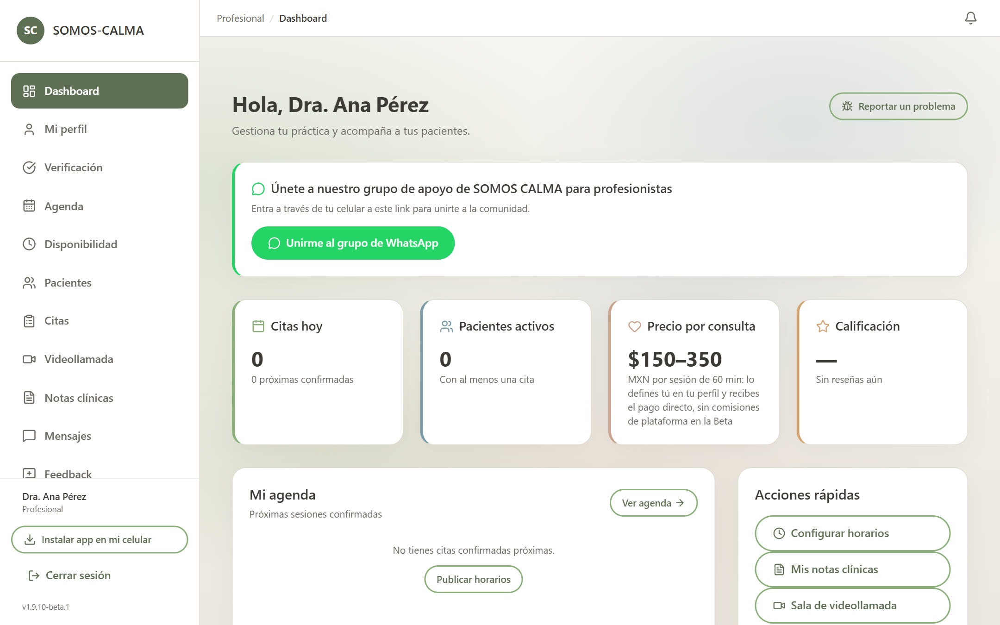
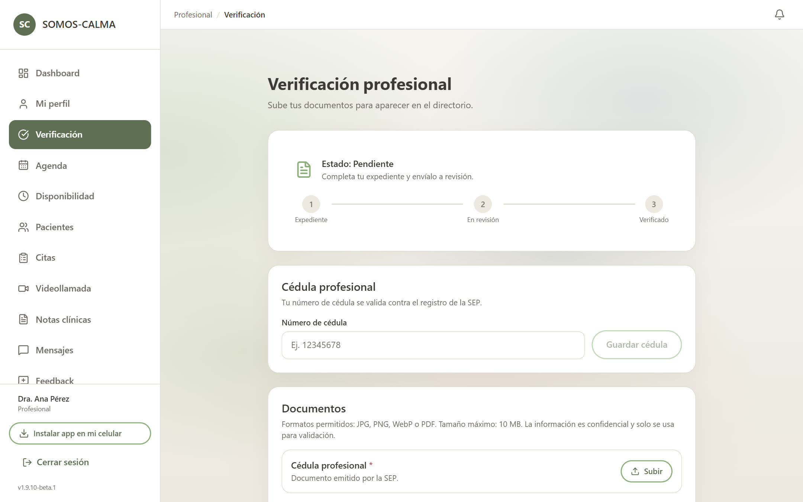

👁️
Flujo de pacientes
Perfil en nuestro directorio para que pacientes que buscan apoyo puedan agendar contigo.
Únete a una red de psicólogos y tanatólogos. Recibe pacientes sin invertir en publicidad y accede a conferencias, bibliografía y materiales para tus sesiones.
Mira este breve video y descubre en qué consiste Somos Calma, cómo recibir pacientes a través de la plataforma y todo lo que incluye tu acceso como profesional de la salud mental.
Quiero unirmePerfil en nuestro directorio para que pacientes que buscan apoyo puedan agendar contigo.
Dos conferencias al mes grabadas, impartidas por especialistas en psicología y tanatología.
Acceso a libros, mapas mentales, actividades y recursos que puedes usar en tus sesiones.
Tú decides cuándo atender. Cubrimos turnos de 7 a.m. a 11 p.m., los 7 días de la semana.
Durante la Beta la plataforma no cobra comisiones: tú defines el precio de tu consulta (entre $150 y $350 MXN) y recibes el pago directamente del paciente.
Espacios de contención y supervisión para cuidar también de ti mientras cuidas a otros.
Al unirte, accedes a una intranet sencilla donde gestionas tu agenda, consumes formación y encuentras recursos para acompañar mejor a tus pacientes.

Tu panel de trabajo: agenda, pacientes y accesos directos
Todo lo que necesitas para recibir pacientes y seguir formándote.
Cédula profesional vigente en Psicología. Experiencia en atención de ansiedad, depresión, salud mental o áreas afines.
Cédula profesional y formación o certificación comprobable en Tanatología o Acompañamiento en Duelo.
Además revisamos competencias digitales, habilidades de escucha activa y manejo de crisis. El proceso incluye un formulario, una entrevista con roleplay y una inducción a la plataforma.
Aplicar como profesionalFormulario y documentos desde tu celular, en menos de 10 minutos.
Revisamos tu cédula y título manualmente en 24–48 horas.
Una breve entrevista y tu inducción a la plataforma.
Tu perfil se publica en el directorio y comienzas a recibir pacientes.

Así se ve tu verificación documental dentro de la plataforma
No durante la Beta: no hay cuotas ni comisiones de plataforma. Cuando la Beta termine, cualquier cambio en el modelo se te comunicará con al menos 30 días de anticipación y tu participación será siempre voluntaria.
El paciente te paga directamente por cada sesión, con el método que ambos acuerden (transferencia SPEI o tarjeta). Somos Calma no procesa ni retiene tus pagos durante la Beta; tú defines tu tarifa entre $150 y $350 MXN por sesión.
Subes tu cédula y título desde tu portal y nuestro equipo los revisa manualmente en 24–48 horas (consultamos la cédula en el registro público de la SEP). Tu perfil se publica en el directorio solo después de ser verificado.
Sí, totalmente. Publicas los espacios que quieras dentro de nuestra cobertura (7 a.m. a 11 p.m., los 7 días de la semana) y puedes modificarlos en cualquier momento. Solo las citas ya agendadas requieren respetar el aviso de cancelación.
Somos honestos: la red está creciendo. Los pacientes te encuentran en el directorio según tu especialidad y tus horarios publicados — a mayor disponibilidad, mayor visibilidad. Durante la Beta no hay mínimos ni obligación de carga de pacientes.
Una computadora o tablet con cámara y micrófono, conexión a internet estable y un espacio privado y tranquilo. La videollamada corre dentro de la plataforma: no necesitas instalar nada ni compartir tus datos personales con el paciente.
Completa tu solicitud y te contactaremos en 24–48 horas.
Aplicar como profesional